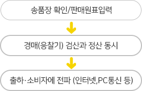
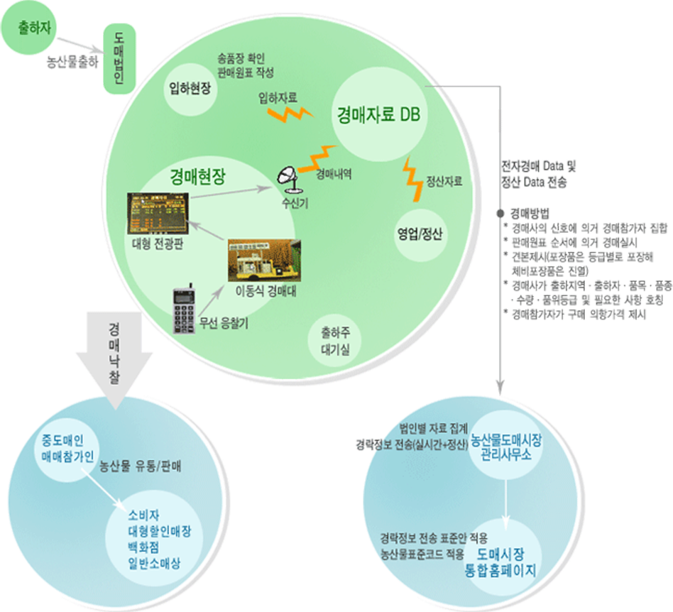

1.
전자경매의 정의-
현재의 수지식 경매과정을 응찰에서부터 낙찰 및 기록에 이르기 까지의 전과 정에 걸쳐 전자화·자동화 한 것을 말함
고정식.이동식, 유선식.무선식 등 다양한 현태로 구현 가능.
정부에서 확대 추진하고자하는 전자경매는, 무선응찰기와 이동식경매대를 사용하는 방식으로서 수지식 경매과정을 그대로 재현한 경매입니다.
2.
왜 전자경매를 하는가?-
경매과정의 공정성, 투명성을 높일 수 있습니다.
경락정보 실시간 전파 기반이 구축됩니다.
정보화를 통해 도매시장의 효율성을 제고할 수 있습니다.
→ 고객의 편익을 도모하고 도매시장의 경쟁력을 향상
3.
향후 추진 방향-
인터넷을 통해 경락정보가 실시간으로 제공됩니다. → 안방에서도 경락가격을 확인할 수 있습니다.
전자경매 우수 법인에 인센티브를 부여해 나갑니다. → 출하 장려금은 출하금의 0.3~0.5% 가산지원
4.
수지식과 전자식경매 비교-
구분 수지식 전자식 경매과정  경매시작 말 벨, 점등 가격제시 손가락 응찰기 가격판단 여러사람 손가락 모니터 낙찰 말 버튼 차이점 시작과 낙찰에서는 별 차이가 없으나 가격제시, 가격판단이 크게 다름
5.
내용 운영상 차이-
구분 수지식 전자식 경매절차 반입량 확인 후 경매하면서 원표를 작성한 후 자료입력하여 정산서 발급 반입량을 확인한 후 자료를 입력한 후 경매를 하면 자동으로 정산서 발급 소요인력 3명 2명 낙찰자결정 - 최고가격 제시자
- 경매사 실수(또는 고의)로 최고 가격
제시자에게 낙찰되지 않는 경우 있음- 최고가격 제시자
- 최고가격 제시자에게 낙찰되지 않는
경우 없음소요시간 건당 약 22초 건당 약 14초 (단축가능) 정보분산체계 경매완료 후 정산서가 작성되어 집계되어야 정보제공 가능 반입단계에서부터 실시간 정보분산 가능
6.
장단점 비교-
구분 수지식 전자식 장점 - 별도 비용이 필요없음
- 경매에 흥이 있음
- 기존 중도매인은 별도의 적응 과정 불필요- 경매에 대한 불신 해소
- 업무의 신속화.간소화
- 안목경매 가능
- 유통종사자 등에 대한 서비스 향상
- 경매참가자 저변확대단점 - 경매과정에 담합 등 불신 상존
- 업무과정의 복합성.후진성
- 눈치경매 조장
- 경매참가에 애로
- 신속한 정보전파에 애로- 설치비용 등 투자비용 과다
- 유지.보수비용 발생
- 노령화된 중도매인 적응 불편
7.
흐름도- 
- 주소 강원도 강릉시 유산로 60
- 대표전화 033-644-4654
- 팩스 033-646-4860

"전자경매는 유통거래의공정성과 투명성 확보로 신뢰성을제고하고 가격정보의실시간 제공을 통해 유통정보의신속한 서비스를 제공합니다."